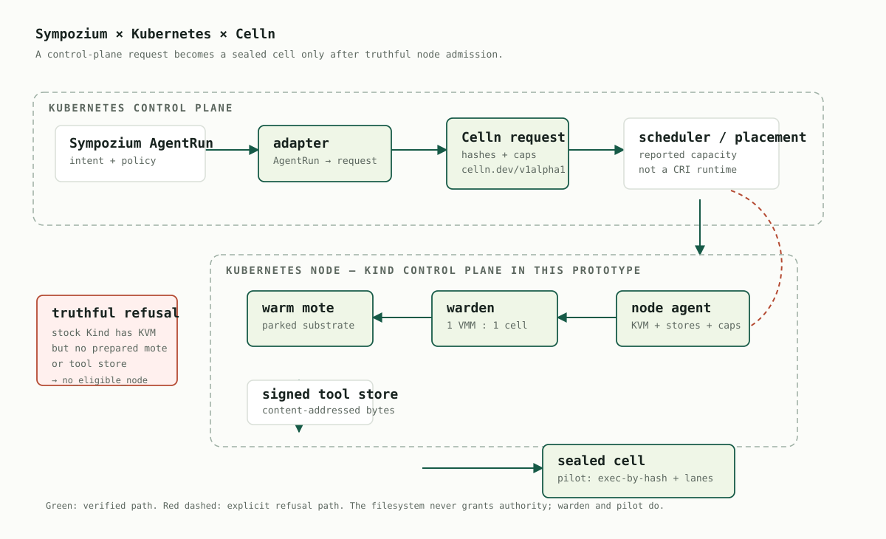
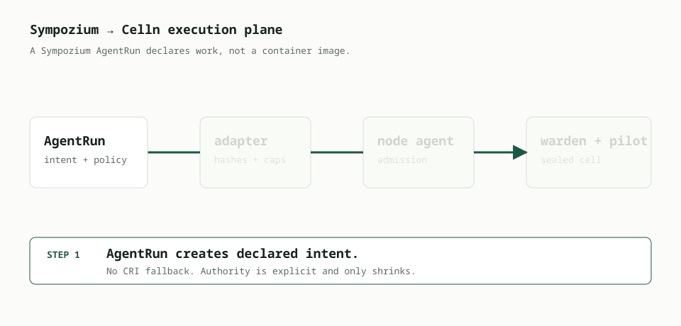
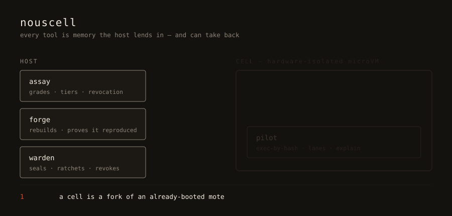

Celln describes a run, admits it, and dispatches it from Kubernetes.
Sympozium keeps the AgentRun control plane. Celln has a versioned immutable request, an explicit executable invocation, a structured terminal receipt, truthful node eligibility — and, as of the dispatcher work below, a running node service that turns an admitted request into one warden, one microVM, and one sealed cell.
celln.dev/v1alpha1 request submitted through the actual deployed Kubernetes Service reaches a host dispatcher, resolves the declared program by hash, boots a real KVM cell, and returns a genuine ExecutionReceipt — see the proof page for the evidence, not a claim. Two things remain honestly incomplete, not hidden: the guest still boots this node's own kernel rather than the mote bundle's declared one (why, on the dispatcher page), and Sympozium's controller today dispatches through Celln's older, free-form /v1/actions rather than this hash-pinned contract — migrating it is the concrete next step.Run the proof
git switch feat/kubernetes-execution-plane ./integrations/kubernetes/prove.sh ./scripts/benchmark-kubernetes-agents.sh --runs 10 --parallel 2 ./scripts/benchmark-kubernetes-agents.sh --runs 20 --parallel 3 xdg-open docs/kubernetes.html
The first command is the original admission-only check: it builds the local node-agent image, loads it into Kind, deploys the DaemonSet, and confirms a truthful no_eligible_node refusal on a cluster with no prepared stores — a fresh cluster should refuse, not fake success. It does not exercise the dispatcher; for that, see the integration proof, run against a real KVM node with a deployed router and dispatcher. The two benchmark commands run real Celln agent cells on this KVM host and save raw CSV plus logs below target/kubernetes-agent-bench/.
Full stack

Diagram key: every stage this diagram shows is now real — node probe/admission, the dispatcher, artifact resolution, warden dispatch, pilot completion, and receipt publication. The one asterisk: the dispatcher resolves the mote bundle's declared kernel/initrd hashes to prove they exist, but still boots the node's own kernel rather than an arbitrary stored one (same caveat as above).
Celln deliberately is not a RuntimeClass: CRI gives a process a mutable filesystem and container lifecycle, while Celln needs immutable content hashes, explicit capabilities, hardware admission, and host-enforced revocation.
How one request moves

- Real on the Celln side, not yet on the Sympozium side: Sympozium's controller dispatches
backend: cellnAgentRuns today, but through Celln's older free-form endpoint — it does not yet construct acelln.dev/v1alpha1request. That's the concrete gap, not a hypothetical one. - Implemented: the node agent validates request shape and reports KVM, CPU virtualization, bootable guest kernel, stores, and capacity.
- Implemented: malformed or ineligible requests are refused with a stable reason; a fresh Kind node with no prepared stores truthfully returns
no_eligible_node. - Implemented: the dispatcher resolves artifacts by hash, seals the resolved program into a real cell, runs pilot, and publishes a receipt — proven end-to-end on real hardware.
- Implemented: that receipt is served back over the same Kubernetes-routed HTTP path a control plane would poll.
Exactly where the integration stands
| Boundary | Status | Evidence / contract | What is still required |
|---|---|---|---|
| Immutable request | Implemented | ExecutionRequest validates BLAKE3 mote/tool/input references, limits, egress, and invocation.alias. | Nothing — validated and exercised by a running dispatcher. |
| Explicit executable | Implemented | declared-tool.json selects one declared tool plus argv. | Nothing — the dispatcher resolves and runs exactly this today. |
| Node admission | Implemented | celln node probe / admit; kernel-less KVM nodes are refused. | Nothing new since this page last described it. |
| Hardware isolation | Implemented, host-proven | Warden/KVM tests prove fork, sealing, pilot hash gate, and guest execution — and the dispatcher runs the same path live. | Nothing — this is the path a real dispatcher now uses, not a separate hardware test. |
| Terminal result | Implemented | succeeded-receipt.json binds request, node, cell, resolved authority, and immutable output — and a real dispatcher produces one. | Nothing — bounded stdout is content-addressed and a validated receipt is published after real pilot completion. |
| Sympozium dispatch | Partially implemented | agentrun_celln.go dispatches backend: celln runs today. | Migrate off Celln's older /v1/actions onto this page's celln.dev/v1alpha1 contract — see the Sympozium integration page. |
| End-to-end Ensemble | Intentionally excluded | Sympozium actions. | Not planned — Celln is a hermetic-action backend, not an Ensemble executor. See that page for why this is scope, not a gap. |
What Celln hands to Sympozium today
A request names immutable substrate, tools, predecessor data, limits, isolation requirements, and one declared executable. A terminal receipt has immutable resolved authority and output references. Mutable AgentRun.status.result, ConfigMaps, image tags, URLs, paths, and shared volumes are not Celln authority channels — and a real dispatcher now enforces that on every request, not just at contract-validation time.
{
"invocation": { "alias": "/tools/formatter", "args": ["--check"] },
"tools": [{ "alias": "/tools/formatter", "hash": "blake3:…" }]
}
Inside a cell

Every cell is a sealed mote. A mote is the substrate at rest; it becomes a cell only after warden forks it, seals it, and loans its declared tools.
Measured on this machine
| Exercise | Count / mix | Observed result | What the number includes |
|---|---|---|---|
| Celln agent cells | 10: 6 code-build, 4 web-crawler | 10/10 succeeded; duration p50 13,409 ms, p99 20,549 ms | model reply + two reproducible Rust builds + seal + guest work |
| Celln agent cells | 20: 12 code-build, 8 web-crawler | 20/20 succeeded; duration p50 13,458 ms, p99 17,105 ms | same end-to-end path, three concurrent client processes |
| Warm-mote hardware bench | 50 real cells | 50/50 reached guest userspace; no cell booted a kernel | spawn→userspace p50 6,065 µs, p99 10,623 µs |
| Kind admission | 1 Kind node | KVM detected; explicit no_eligible_node | Kind lacks a prepared mote and signed tool store |
Interpret the timing correctly. Agent-cell durations are end-to-end user latency, dominated by model generation and reproducible compilation. The microsecond warm-mote numbers are the execution-plane latency. The host has a soft 1,024-file-descriptor limit, so the 1,000-cell synthetic fork test stopped at 340 cells; the raw measurement is in target/celln-bench/m1-m2-kvm.json, not hidden.
What shipped, and what's next
The local node dispatcher this page used to describe as upcoming is built and proven: it resolves one immutable mote bundle and executable from verified stores, stages the tool filesystem, runs pilot inside a real Celln guest, bounds and content-addresses stdout, and emits a validated ExecutionReceipt — failing closed on missing/corrupt artifacts, a manifest mismatch, a missing pilot marker, timeout, or output overflow. Kubernetes transport is wired to it: a request submitted through the deployed router Service reaches it and gets a real receipt back. What's next is narrower than "build the dispatcher" now — it's migrating Sympozium's controller onto this contract instead of Celln's older one, and closing the kernel/initrd provenance gap.
Implementation: integration notes · cross-project design · dispatcher runtime · integration proof · invocation example · receipt example · Celln #13.